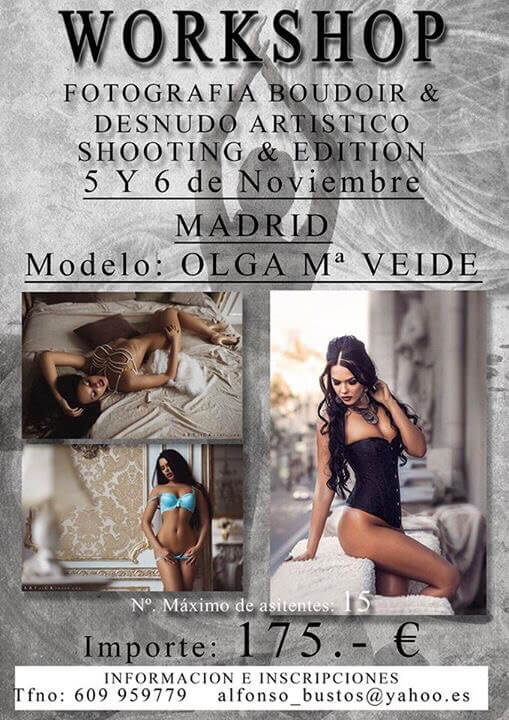

Workshops
Workshop con la magnifica modelo OLGA MARIA WEIDE, de reconocido prestigio internacional y que ha colaborado con los mejores fotografos internacionales...
Podeis ver su perfil en Facebook:
https://www.facebook.com/olgamaria.veide?fref=ts
El workshop se realizara en Madrid, en las instalaciones de PHOTO MASK STUDIO, en C/ Las Mercedes, 4
Trabajaremos la forma de preparar una sesión de boudir y desnudo artistico,manejo de la luz con diversos sets de decorados, dirección de posado y uso de accesorios.
Los asistentes tendrán una participación activa, pudiendo intervenir en cualquier momento y se realizaran diversos shootings en cada uno de los sets, donde los asistentes realizarán sus fotografías, para uso personal (nunca comercial)
La modelo cederán todos los derechos de reproducción en webs y perfiles sociales personales
Contaremos con el magnifico trabajo de peluqueria y maquillaje de PILAR TORREBLANCA
TEMARIO:
SABADO 24
de 10:00 a 15:00
BOUDOIR
La ambientación en Clave Alta y Clave baja
Maquillaje y Peluqueria.
Composición y diversos angulos de captura
Manejo de luces: Posición, color, calidad y potencia. El uso de accesorios.
Dirección de posado
Trabajo con relación de contraste a partir de exposímetro
de 16:00 a 21:00...
DESNUDO ARTISTICO
Conceptos de Fotografia de desnudo artistico. Los limites.
Conocer las variables para elegir la iluminación mas adecuada...la clave baja en pura esencia
Iluminación y sets de trabajo
Maquillaje y Peluqueria.
Estilismos y Atrezzo
Dirección de modelo y posados
DOMINGO 25
EDICIÓN:
+Trabajar el Raw al máximo
+Rangos y doble procesado del RAW
+Separación de frecuencias
+Enfoque
+Trabajar la piel con un acabado final perfecto
+Tonalidades
+Reiluminación adecuada
+Técnicas Dodge&Burn
+Filtros Y PLUGGINS
+Estructura
+Efectos
Evaluación en grupo de los resultados.

Olga-Maria Veide